สรุป
11 ผ่าน1 ผ่านบางส่วน2 ยังไม่ได้ทดสอบ1 บั๊กแก้แล้ว2 จุดที่ผู้ใช้อาจงง แก้แล้ว2 เรื่องเล็ก แก้แล้ว1 คำถามตัดสินแล้ว
เปิดอ่าน ส่งข้อความ ส่งลงบอร์ดระหว่างอ่าน หยุดส่งกลางทาง ถอดสาย ออกจากหน้า และปิดแอป ทำงานถูกต้องบนบอร์ดจริง ไม่มี process ของ engine หรือ avrdude ค้าง และพอร์ตถูกปล่อยทุกครั้ง พบบั๊ก 1 ข้อที่ทำให้ข้อความบรรทัดแรกหลังเปิดอ่านใหม่ผิด จุด UX 2 ข้อในหน้าเชื่อมบอร์ดตอนเสียบสายกลับ และเรื่องเล็ก 2 ข้อ (ข้อความเมื่อส่งไม่สำเร็จ และตัว "�" หลังเปิดอ่าน) ทั้งหมดแก้แล้วและทดสอบซ้ำบนบอร์ดจริงผ่าน ส่วนคำถาม E ตัดสินแล้วว่าไม่เพิ่มปุ่มหยุดอ่าน ตาม mockup
รอบ 4 พฤศจิกายน: ตัวนับข้อความใหม่บนแท็บ Output และข้อความล่าสุดตอนยุบลิ้นชักทำงานบนบอร์ดจริง ส่งลงบอร์ด หยุดส่ง และเปิดอ่านยังทำงานหลังแก้ตามผลตรวจ และเมื่อหน้า Block Lab พังระหว่างส่ง การปิดแอปด้วย Alt+F4 หรือปุ่มปิดจะรอให้ส่งเสร็จ บอกเหตุผลบนจอ แล้วปิดเอง บอร์ดได้โปรแกรมใหม่ครบ
ผลแต่ละข้อ
# สิ่งที่ทดสอบ ผล สิ่งที่วัดได้
1 เปิดอ่านข้อความจากบอร์ด ผ่าน ข้อความขึ้นทุก 1–2 วินาทีตามโปรแกรม 2 ส่งข้อความไทย 60 ตัว ผ่าน 180 ไบต์ ส่งได้ ขึ้นใน log ช่องพิมพ์ล้างเอง 3 ส่งลงบอร์ดระหว่างเปิดอ่าน ผ่าน หยุดอ่าน ส่งเสร็จใน 8–10 วินาที แล้วอ่านต่อเอง · พบบั๊ก A (แก้แล้ว) 4 หยุดส่งกลางขั้นส่งลงบอร์ด ผ่าน ถามยืนยันก่อนหยุด · ไม่มี process ค้าง · ลองอีกครั้งแล้วส่งผ่าน 5 ถอดสาย USB ระหว่างอ่าน ผ่าน หยุดอ่าน ขึ้น "สายหลุด" engine ปิดเอง · พบจุด B และ C ตอนเสียบกลับ (แก้แล้ว) 6 บอร์ดพิมพ์ไม่หยุด 3 นาที ผ่าน ประมาณ 48 บรรทัดต่อวินาที · หน่วยความจำนิ่ง · UI ตอบสนองปกติ 7 ออกไปหน้าหลักระหว่างอ่าน ผ่าน ถามบันทึกงานก่อน · engine ปิดใน 0.14 วินาที 8 ปิดแอประหว่างอ่าน ผ่าน ถามบันทึกงานเมื่อมีงานแก้ · ทุก process ปิดใน 0.34 วินาที 9 สลับไป Arm Lab แล้วจับเวลาหยุดหุ่น ผ่านบางส่วน engine ของ Block Lab ปิดก่อนเข้า Arm Lab · ไม่ได้จับเวลาหยุดหุ่นเพราะไม่มีแขนกล 10 แขนกลที่ใช้ชิป CH340 เสียบพร้อมกัน ยังไม่ได้ทดสอบ ไม่มีแขนกลเสียบ และห้ามเปิด Serial บนพอร์ตแขนกล 11 macOS ยังไม่ได้ทดสอบ ไม่มีเครื่อง Mac 12 ตัวนับข้อความใหม่บนแท็บ Output ผ่าน อยู่แท็บโค้ดแล้วป้ายนับขึ้นตามบรรทัดที่เข้ามา · กลับ Output ป้ายหาย 13 ข้อความล่าสุดตอนยุบลิ้นชัก ผ่าน "ล่าสุด: สวัสดี · 106 บรรทัด" ชิดขวาเหมือนดีไซน์ · แสดงเฉพาะแท็บ Output 14 ส่ง · หยุดส่ง · เปิดอ่าน หลังแก้ตามผลตรวจ ผ่าน ส่งระหว่างอ่าน 10 วินาทีแล้วอ่านต่อ · หยุดส่งใน 0.5 วินาที ไม่มี process ค้าง · ส่งใหม่ 8 วินาที 15 หน้า Block Lab พังระหว่างส่ง แล้วปิดแอป ผ่าน Alt+F4 และปุ่มปิด: ข้อความรอส่งขึ้นภายใน 0.2 วินาที · แอปปิดเองหลังส่งจบ (7–8 วินาที) · บอร์ดได้โปรแกรมใหม่
สิ่งที่ต้องแก้หรือตัดสินใจ
บั๊ก A แก้แล้ว
เศษบรรทัดจากรอบอ่านก่อนไปต่อกับบรรทัดแรกของรอบใหม่
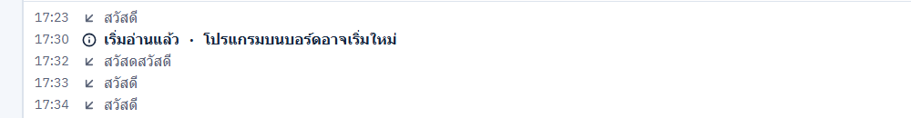
ก่อนแก้: "สวัสด" ไปต่อหน้า "สวัสดี" กลายเป็น "สวัสดสวัสดี"
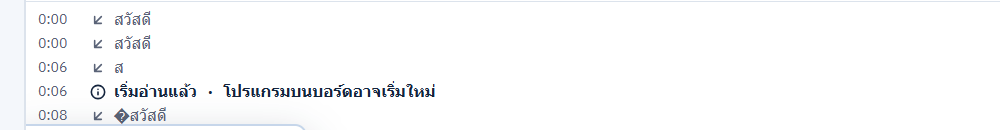
หลังแก้: เศษ "ส" อยู่บรรทัดของตัวเองก่อน "เริ่มอ่านแล้ว" (ตัว � ดูจุด F)
อาการ หยุดอ่านตอนบอร์ดพิมพ์ไปครึ่งบรรทัด ("สวัสด") พอเปิดอ่านใหม่ บรรทัดแรกขึ้นเป็น "สวัสดสวัสดี"
เกิดเมื่อ ทุกครั้งที่การอ่านหยุดกลางบรรทัดแล้วเปิดใหม่ เช่น ส่งลงบอร์ดระหว่างอ่าน ถอดสาย หรือหยุดส่งแล้วกดเปิดอ่าน
สาเหตุ open() ใน useBoardSerial.ts สร้าง TextDecoder ใหม่ แต่ไม่ล้าง partial ของ log (serialLog.ts) เศษเดิมจึงถูกนำหน้าข้อความแรกที่ได้รับ ทั้งที่บอร์ดเริ่มโปรแกรมใหม่แล้วความเสี่ยง ไม่กระทบอุปกรณ์ แต่เด็กเห็นข้อความผิดจากที่บอร์ดส่ง
สิ่งที่แก้ เพิ่ม endPartialLine() ใน serialLog.ts ให้เศษที่ค้างกลายเป็นบรรทัดของมันเอง เรียกตอนเปิดอ่านรอบใหม่ (ก่อนบรรทัด "เริ่มอ่านแล้ว") และตอนอ่านไม่ได้ (เศษอยู่ก่อนบรรทัด error) · เพิ่ม test ใน tests/block-lab-serial.test.mjs
ตรวจแล้ว npm run typecheck ผ่าน · npm run build ผ่าน (release asset check) · Block Lab tests 17/17 · build แอปใหม่ที่ dist/desktop-serial-fix แล้วส่งลงบอร์ดระหว่างที่บอร์ดพิมพ์ไม่หยุด 4 รอบ เศษ "ส", "สว", "สวัส" แยกบรรทัดทุกรอบ ไม่มีบรรทัดต่อกัน
จุด B แก้แล้ว
เสียบสายกลับแล้วเห็นบอร์ดเดียวกันซ้ำสองการ์ด
ก่อนแก้: การ์ดซ้ำสองใบ
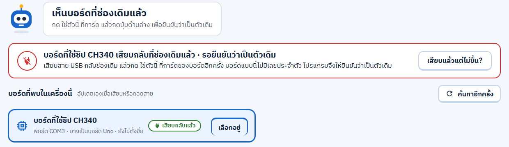
หลังแก้: การ์ดเดียวมีป้าย "เสียบกลับแล้ว" หุ่นและแถบด้านบนบอกให้กด "ใช้ตัวนี้" แล้วยืนยัน
อาการ หน้าเชื่อมบอร์ดแสดงการ์ด "บอร์ดที่ใช้ชิป CH340 · COM3" สองใบ ใบเก่าขึ้น "สายหลุด · รอเสียบกลับ" ใบใหม่มีปุ่ม "ใช้ตัวนี้" ทั้งที่เป็นบอร์ดตัวเดียวกัน
ที่มา ตั้งใจให้บอร์ดที่ไม่มีเลขประจำตัวต้องกดยืนยันใหม่ (กันส่งโปรแกรมเข้าแขนกลที่ใช้ชิปเดียวกัน) แต่การแสดงการ์ดเก่าค้างไว้ทำให้เด็กไม่รู้ว่าต้องกดใบไหน
สิ่งที่แก้ เมื่อมีอุปกรณ์ VID:PID เดียวกันกลับมาที่พอร์ตเดิม (returnedBoard() ใน boardDevices.ts) การ์ดเก่าจะหายไป เหลือการ์ดเดียวที่มีป้าย "เสียบกลับแล้ว" หุ่นพูดว่า "เห็นบอร์ดที่ช่องเดิมแล้ว" แถบด้านบนเปลี่ยนเป็น "…เสียบกลับที่ช่องเดิมแล้ว · รอยืนยันว่าเป็นตัวเดิม" และปุ่มล่างไม่ขึ้น "รอบอร์ดกลับมา…" แล้ว · เด็กยังต้องกด "ใช้ตัวนี้" และปุ่มยืนยันเหมือนเดิม กฎความปลอดภัยไม่เปลี่ยน
จุด C แก้แล้ว
ปุ่มยืนยันบอร์ดเดิมใช้ชื่อเดียวกันทั้งสองฝั่ง
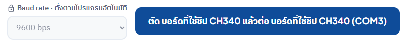
ก่อนแก้
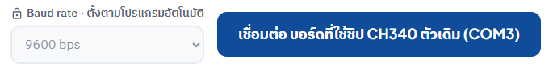
หลังแก้
อาการ ปุ่มล่างเขียนว่า "ตัด บอร์ดที่ใช้ชิป CH340 แล้วต่อ บอร์ดที่ใช้ชิป CH340 (COM3)" อ่านแล้วเหมือนเปลี่ยนไปบอร์ดอื่น
สิ่งที่แก้ เมื่อเลือกการ์ดที่เสียบกลับ ปุ่มเป็น "เชื่อมต่อ {ชื่อบอร์ด} ตัวเดิม (COM3)" (key blockLab.connect.footer.confirmBack ครบ th/en/zh) · การเปลี่ยนไปบอร์ดอื่นยังใช้ข้อความ "ตัด … แล้วต่อ …" เหมือนเดิม
ตรวจแล้ว (B และ C) npm run typecheck ผ่าน · i18n 14/14 · Block Lab tests 18/18 (เพิ่ม test การ์ดเดียวตอนเสียบกลับ) · build แอปที่ dist/desktop-connect-fix (ผ่าน release asset check) · ดูใน preview ด้วยอุปกรณ์จำลอง และลองบนแอปจริง: ถอดสาย COM3 แล้วเสียบกลับ เห็นการ์ดเดียว กดยืนยันแล้วขึ้น "บอร์ดกลับมาแล้ว!"
เล็ก D แก้แล้ว
ส่งข้อความไม่สำเร็จทุกกรณีขึ้นว่า "สาย USB อาจหลุด"
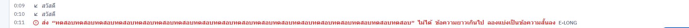
หลังแก้: ข้อความยาวเกินบอกตรงสาเหตุ พร้อมรหัส E-LONG
อาการ ใส่ข้อความ 90 ตัว (270 ไบต์ เกินขีด 256 ไบต์ของ engine) แล้ว engine ปฏิเสธด้วย INVALID_INPUT แต่ log ขึ้น "สาย USB อาจหลุด" (E-USB) การอ่านยังทำงานต่อปกติ
โอกาสเกิด ต่ำ ช่องพิมพ์จำกัด 60 ตัวอยู่แล้ว ข้อความ 90 ตัวนี้ใส่ผ่านเครื่องมือทดสอบที่ข้ามขีดจำกัดของช่อง
สิ่งที่แก้ sendFailure() ใน useBoardSerial.ts เลือกข้อความตามรหัส: TRANSPORT_ERROR = "สาย USB อาจหลุด" (E-USB) · INVALID_INPUT = "ข้อความยาวเกินไป ลองแบ่งเป็นข้อความสั้นลง" (E-LONG) · อื่นๆ = "โปรแกรมขัดข้อง ลองส่งอีกครั้ง" (E-APP) · คำแปลครบ th/en/zhตรวจแล้ว typecheck · i18n 14/14 · ลองบนแอปจริงด้วยข้อความ 270 ไบต์ ขึ้น E-LONG ตามภาพ
คำถาม E ตัดสินแล้ว
ระหว่างอ่านไม่มีปุ่มหยุดอ่าน
สิ่งที่เห็น เมื่อเปิดอ่านแล้ว แผง Output มีแค่ "เลื่อนตาม" และ "ล้าง" การอ่านหยุดได้ด้วยการออกจาก Block Lab เลือกบอร์ดอื่น หรือถอดสายเท่านั้น ระหว่างนั้นโปรแกรมอื่นเช่น Arduino IDE ใช้ COM3 ไม่ได้
การตัดสิน ไม่เพิ่มปุ่ม "หยุดอ่าน" ตาม mockup TerminalA2 · ยอมรับว่าระหว่างอ่าน โปรแกรมอื่นใช้พอร์ตนั้นไม่ได้ (บันทึกเป็น S7-3 ในรายการคำถามที่ตัดสินแล้ว)
เล็ก F แก้แล้ว
บรรทัดแรกหลังเปิดอ่านใหม่อาจขึ้นต้นด้วย "�"
อาการ พบ 1 ใน 4 รอบตอนบอร์ดพิมพ์ไม่หยุด: บรรทัดแรกหลัง "เริ่มอ่านแล้ว" เป็น "�สวัสดี"
สาเหตุ (วัดจริง) เปิด COM3 ตรงๆ 6 รอบแล้วจดเวลาของทุกไบต์ รอบที่บอร์ด reset จริงได้ไบต์ขยะ 00 80 1E 66 00 80 9E 98 00 80 9E E0 1E ที่ 23 ms หลังเปิดพอร์ต ส่วนบรรทัดแรกของโปรแกรมมาที่ 1,597 ms (bootloader รอก่อนเริ่มโปรแกรม) ไบต์ขยะนี้เกิดจากสัญญาณตอน UNO reset และถอดรหัสเป็น "�"
สิ่งที่แก้ engine ทิ้งไบต์ที่มาถึงใน 250 ms แรกหลังเปิดพอร์ต (sessionSettle ใน engines/mixly/serial_session.go) ช่วงนี้ยังไม่มีข้อความจากโปรแกรมจริงเพราะ bootloader รอประมาณ 1 วินาที บอร์ดที่ไม่ reset ตอนเปิดพอร์ตจะเสียข้อความได้ไม่เกิน 250 ms แรก · เขียนลง docs/API.md แล้ว · เพิ่ม Go test
ตรวจแล้ว mixly build-engine -Test ผ่าน (Go test + IPC 13/13) · build แอปใหม่ที่ dist/desktop-serial-df แล้วส่งลงบอร์ดระหว่างที่บอร์ดพิมพ์ไม่หยุด 5 รอบ บรรทัดแรกหลังเปิดอ่านเป็น "สวัสดี" ทุกรอบ ไม่มี "�" ใน log เลย
รายละเอียดพร้อมภาพหน้าจอ
กดที่ภาพเพื่อเปิดขนาดเต็ม 1920×1080
ผ่าน
1. เปิดอ่านข้อความจากบอร์ด
เลือกบอร์ด CH340 COM3 กด "ใช้ตัวนี้" กด "เชื่อมต่อ" แล้วกด "เปิดอ่านข้อความจากบอร์ด"
ขึ้นบรรทัดระบบ "เริ่มอ่านแล้ว · โปรแกรมบนบอร์ดอาจเริ่มใหม่" ตามด้วยข้อความจากบอร์ดพร้อมเวลา ป้าย "จากบอร์ด Uno" ขึ้นข้างหัวข้อ
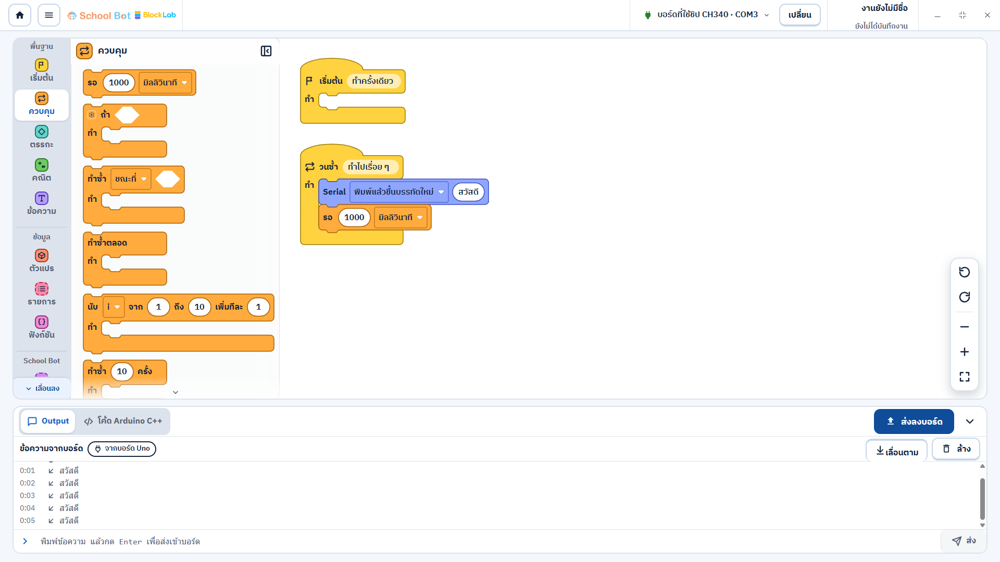
เปิดอ่านแล้ว ข้อความ "สวัสดี" ขึ้นทุก 1 วินาทีตามโปรแกรม
ผ่าน
2. ส่งข้อความไทย 60 ตัว
พิมพ์ "ทดสอบ" 12 ครั้ง (60 ตัวอักษร 180 ไบต์) แล้วกด Enter
ข้อความขึ้นใน log ด้วยลูกศรขาออก ช่องพิมพ์ล้างเอง การอ่านทำงานต่อ
ช่องพิมพ์ตั้ง maxLength 60 ตัว จึงพิมพ์หรือวางเกินไม่ได้ (ดูจุด D)
ผ่าน
3. ส่งลงบอร์ดระหว่างเปิดอ่าน
กด "ส่งลงบอร์ด" ขณะกำลังอ่าน แอปหยุดอ่านเพื่อคืนพอร์ต แปลงโค้ด (ขั้น 1) แล้วส่ง (ขั้น 2)
ส่งสำเร็จใน 8–10 วินาที (แปลงโค้ดครั้งต่อไปใช้ cache ประมาณ 2.5 วินาที) แล้วเปิดอ่านต่อเองบนบอร์ดและพอร์ตเดิม
ส่งลงบอร์ดรวม 8 ครั้งในการทดสอบนี้ สำเร็จ 6 หยุดกลางทางตามที่ตั้งใจ 2 · ส่งระหว่างอ่านที่ปล่อยให้จบ 3 ครั้ง อ่านต่อเองทุกครั้ง · ช่องพิมพ์ปิดระหว่างส่ง
บรรทัด "สวัสดสวัสดี" ในภาพที่สามคือบั๊ก A
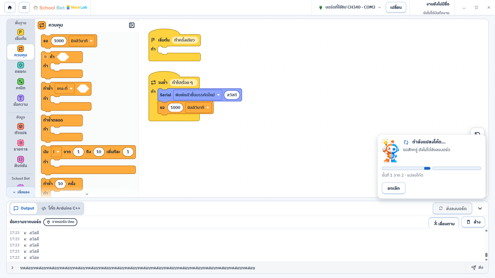
ขั้น 1 แปลงโค้ด · บรรทัดล่างสุด "สวัสด" คือเศษที่ถูกตัดตอนหยุดอ่าน
ขั้น 2 ส่งลงบอร์ด พร้อมคำเตือน "อย่าถอดสาย USB ระหว่างส่ง"
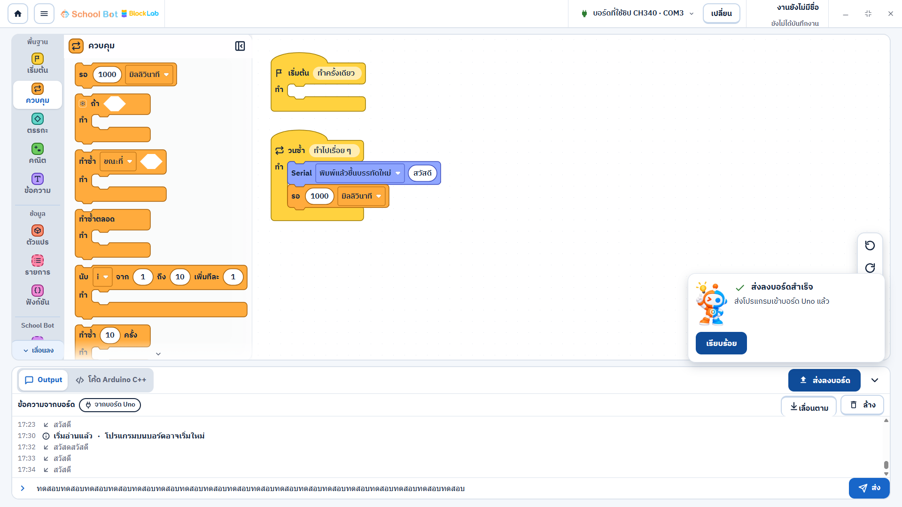
ส่งสำเร็จ แอปเปิดอ่านต่อเอง ("เริ่มอ่านแล้ว")
ผ่าน
4. หยุดส่งกลางขั้นส่งลงบอร์ด
กด "ยกเลิก" ตอนขั้น 2 แอปถามก่อนว่าจะ "ส่งต่อ" หรือ "หยุดส่ง" พร้อมเตือนว่าบอร์ดอาจไม่มีโปรแกรมที่ใช้ได้
กด "หยุดส่ง" ประมาณ 3.5 วินาทีหลังเริ่ม การ์ดขึ้น "หยุดส่งแล้ว" ไม่มี mixly-engine หรือ avrdude ค้าง
แอปไม่เปิดอ่านต่อเองหลังหยุด (ถูกต้องตามที่ออกแบบ) · กด "ลองอีกครั้ง" แล้วส่งผ่าน บอร์ดกลับมาทำงานปกติ
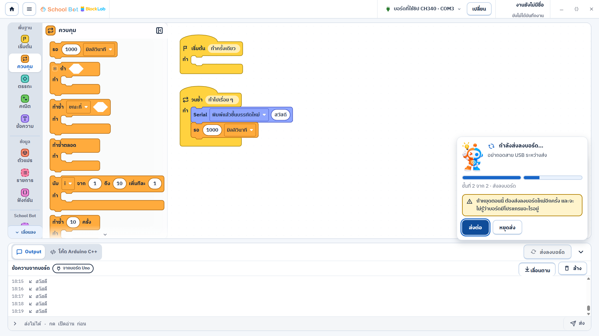
ถามยืนยันก่อนหยุด ปุ่มหลักคือ "ส่งต่อ"
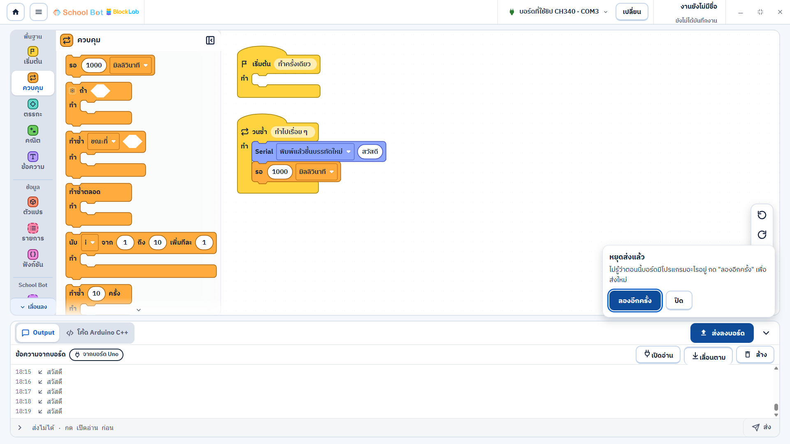
หยุดแล้ว บอกว่าไม่รู้ว่าบอร์ดมีโปรแกรมอะไร และมีปุ่ม "ลองอีกครั้ง"
ผ่าน
5. ถอดสาย USB ระหว่างอ่าน
ผู้ดูแลถอดสายขณะกำลังอ่าน แอปหยุดอ่าน ขึ้น "อ่านข้อความจากบอร์ดต่อไม่ได้ สาย USB อาจหลุด" (E-USB) และป้ายบอร์ดเป็น "สายหลุด"
engine ปิดพอร์ตและจบ process เอง
เสียบกลับแล้วต้องเลือกบอร์ดใหม่ (ตั้งใจไว้สำหรับบอร์ดที่ไม่มีเลขประจำตัว) ระหว่างนั้นเห็นจุด B และ C · เลือกใหม่แล้วกลับมาอ่านได้ปกติ
ทดสอบ 2 รอบ ผลเหมือนกัน
ผ่าน
6. บอร์ดพิมพ์ไม่หยุด 3 นาที
ส่งโปรแกรมที่ println โดยไม่มี delay (ประมาณ 48 บรรทัดต่อวินาทีที่ 9600 baud) แล้วเปิดอ่าน 3 นาที
วัดทุก 30 วินาที: แอป 43–44 MB นิ่ง · WebView ประมาณ 600 MB นิ่ง · mixly-engine 12 MB ขึ้นเป็น 16 MB · UI ตอบภายใน 0.3–0.4 วินาที · เวลาใน log เดินต่อเนื่อง
ไม่มีตัวอักษรเสีย (U+FFFD) แม้ข้อความไทย 3 ไบต์ต่อตัวจะถูกตัดข้ามรอบอ่าน
บรรทัดสุดท้ายที่เห็นไม่ครบ เช่น "ส" คือบรรทัดที่ยังมาไม่ครบ ตั้งใจแสดงไว้จนกว่าจะขึ้นบรรทัดใหม่
engine ใช้หน่วยความจำเพิ่ม 4 MB ใน 3 นาที ควรทดสอบนานกว่านี้เพื่อดูว่าหยุดเพิ่มหรือไม่
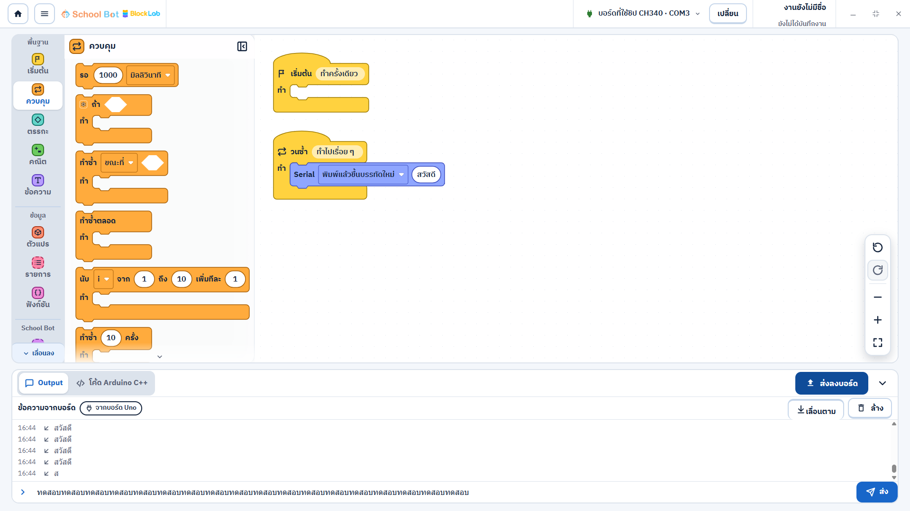
หลังบอร์ดพิมพ์ไม่หยุด 3 นาที ข้อความยังเข้ามาปกติ (เวลาใน log นับจากเปิด log ครั้งแรก)
ผ่าน
7. ออกไปหน้าหลักระหว่างอ่าน
กดปุ่มหน้าหลักขณะกำลังอ่าน แอปถาม "บันทึกงานก่อนออกจากหน้านี้ไหม?"
กด "ไม่บันทึกงาน" แล้ว mixly-engine ปิดภายใน 0.14 วินาที
ผ่าน
8. ปิดแอประหว่างอ่าน
ไม่มีงานแก้: กดปิดแอปแล้วปิดทันที ไม่มี engine หรือ WebView ค้าง
มีงานแก้: แอปถาม "บันทึกงานก่อนปิดโปรแกรมไหม?" กด "อยู่ต่อ" แล้วยังอ่านต่อ (เวลา 0:21 เดินเป็น 0:24)
กดปิดอีกครั้งแล้วเลือก "ไม่บันทึกงาน" แอปและ engine ปิดทั้งหมดใน 0.34 วินาที
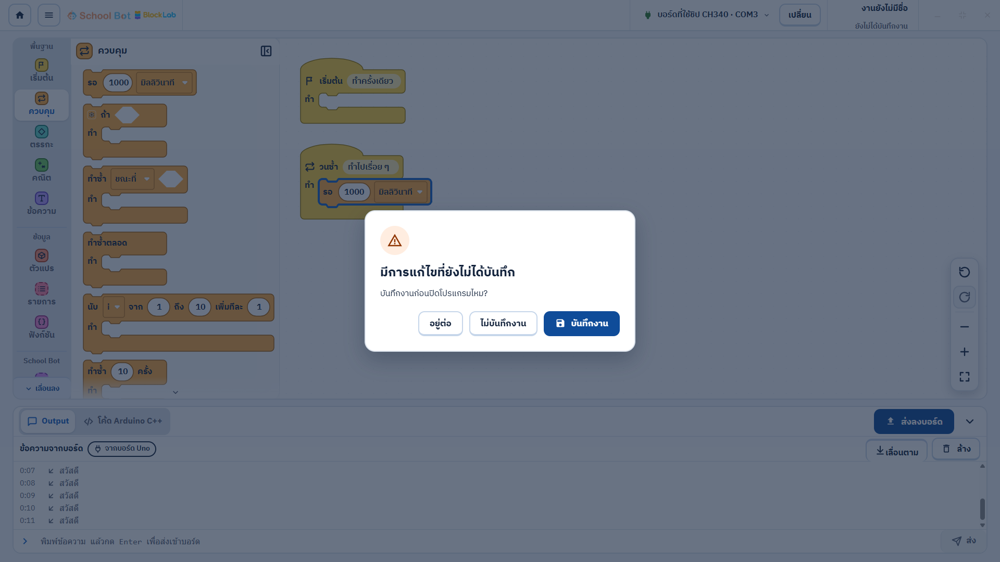
dialog ตอนปิดแอปในหน้าต่างจริง (ข้อนี้ค้างตรวจจากเฟส 4.5 ด้วย)
ผ่านบางส่วน
9. สลับไป Arm Lab
ในแอปต้องผ่านหน้าหลักก่อนเข้า Arm Lab การอ่านของ Block Lab จึงปิดตั้งแต่ออกจากหน้า (0.14 วินาที ตามข้อ 7)
เปิด Arm Lab ได้ ไม่มี engine ของ Block Lab ค้าง ไม่ได้กดเชื่อมหุ่น
ยังไม่ได้จับเวลาคำสั่งหยุดหุ่นจริง ต้องมีแขนกลเสียบ และต้องทดสอบโดยไม่เปิด Serial บนพอร์ตแขนกล
ยังไม่ได้ทดสอบ
10–11. แขนกล CH340 และ macOS
แขนกลที่ใช้ชิป CH340: ต้องเสียบแขนกลกับ UNO พร้อมกัน ใช้ Arm Lab กับแขนกลก่อน แล้วยืนยันว่า Block Lab ปฏิเสธการส่งและการเปิดอ่านพอร์ตนั้น (E-ARM) ห้ามเปิด Serial บนพอร์ตแขนกลเอง
macOS: ยังไม่มีเครื่อง ส่งลงบอร์ดยังไม่ route บน macOS (อยู่ในตาราง "เลื่อนไปทำทีหลัง" เฟส 6)
รอบ 4 พฤศจิกายน: หลังแก้ตามผลตรวจ
ก่อนทดสอบรอบนี้ hardware-safety-reviewer ตรวจตัวกันการส่งฝั่ง host (ผล: ปลอดภัยแบบมีเงื่อนไข ไม่มี blocker) และ rules-reviewer ตรวจ diff ทั้งรอบตาม AGENTS.md (ผล: ผ่านแบบมีข้อแก้ ไม่มีเรื่อง hardware) ข้อที่แก้ก่อนทดสอบ:
จาก สิ่งที่แก้
hardware-safety StopUpload หยุดเฉพาะการส่งลงบอร์ด ถ้าการส่งจบไปแล้วจะไม่ไปยกเลิกคำขอถัดไป เช่น คำสั่งของหุ่นhardware-safety host บอกได้ว่ากำลังส่งอยู่ (UploadRunning) หน้าต่างปิดแอปจึงขึ้นข้อความรอส่ง แม้หน้า Block Lab พังหรือโหลดใหม่ไปแล้ว hardware-safety ตัวกันออกจากหน้า/ปิดแอปเริ่มตั้งแต่ตรวจก่อนส่ง ไม่ใช่เริ่มตอนแปลงโค้ด จึงไม่มีช่องให้หน้าต่างปิดก่อนการส่งเริ่ม hardware-safety หมดเวลาหรือเครื่องมือขัดข้องระหว่างขั้นส่ง บอกว่า "บอร์ดอาจมีโปรแกรมไม่ครบ ต้องส่งใหม่" hardware-safety ตรวจ "กำลังแปลงโค้ด/ส่งอยู่" ใต้ lock ของ Serial ก่อนเปิดพอร์ต · เวลา 2 นาทีเริ่มนับหลังปล่อยพอร์ต Serial · เอกสารบอกว่าคำสั่งหยุดหุ่นอาจรอหลังการส่งได้ราว 2 นาที rules คอมเมนต์ที่มีรหัสงาน วันที่ หรือข้อความตกยุค · ตารางรหัส E-CHK ในคู่มือครู · verify.ps1 รัน test ของ Block Lab ครบ 4 ไฟล์ · ชื่อ placeholder ของรหัสข้อผิดพลาดให้ตรงกันทุกภาษา
ผ่านก่อน build: mixly build-engine -Test (Go + IPC 13/13) · app go vet/go test · typecheck · i18n 14/14 · frontend 65/65 · desktop build ผ่าน release asset check
ผ่าน
12. ตัวนับข้อความใหม่บนแท็บ Output
ต่อบล็อก Serial.println("สวัสดี") กับ delay(1000) ด้วยการแตะบล็อกในรายการ เลือกบอร์ด CH340 COM3 แล้วเปิดอ่าน
สลับไปแท็บโค้ด ป้ายบนแท็บ Output นับ 5, 6 แล้ว 33 ตามบรรทัดที่เข้ามา (ชื่อสำหรับโปรแกรมอ่านจอ "Output มีข้อความใหม่ N บรรทัด")
กลับแท็บ Output แล้วป้ายหาย
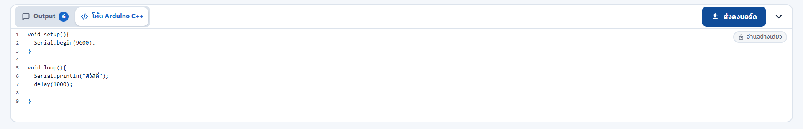
อยู่แท็บโค้ด ป้ายสีน้ำเงินนับบรรทัดที่ยังไม่ได้ดู
ผ่าน
13. ข้อความล่าสุดตอนยุบลิ้นชัก
ยุบลิ้นชักขณะอยู่แท็บ Output แถวแท็บขึ้น "ล่าสุด: สวัสดี · 106 บรรทัด" ชิดขวาข้างปุ่มส่งลงบอร์ด ตรงกับดีไซน์
ตอนยุบอยู่แท็บโค้ดไม่แสดงข้อความนี้ เหมือนดีไซน์ (แสดงเฉพาะแท็บ Output)
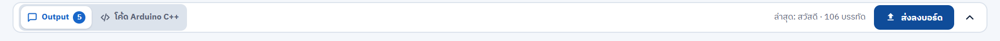
ลิ้นชักยุบ ป้ายนับยังเดินต่อ และเห็นข้อความล่าสุด
ผ่าน
14. ส่ง · หยุดส่ง · เปิดอ่าน หลังแก้
ส่งลงบอร์ดระหว่างอ่าน: แปลงโค้ดราว 4 วินาที ส่งเสร็จราว 10 วินาที แล้วเปิดอ่านต่อเอง · ส่งรอบสองใช้ cache เสร็จใน 3 วินาที
หยุดส่ง: กด "ยกเลิก" 1.5 วินาทีหลังขึ้น "กำลังส่งลงบอร์ด…" กด "หยุดส่ง" แล้วการ์ดขึ้น "หยุดส่งแล้ว" ใน 0.5 วินาที ไม่มี mixly-engine, arduino-cli หรือ avrdude ค้าง และแอปไม่เปิดอ่านต่อเอง
"ลองอีกครั้ง" ส่งสำเร็จใน 8 วินาที เปิดอ่านแล้วได้ "สวัสดี" ทุกวินาที
เวลาในบันทึกคือเวลาที่แอปอ่านได้ (อ่านทุก 300 ms) บางบรรทัดจึงขึ้นวินาทีเดียวกันหรือข้ามหนึ่งวินาที
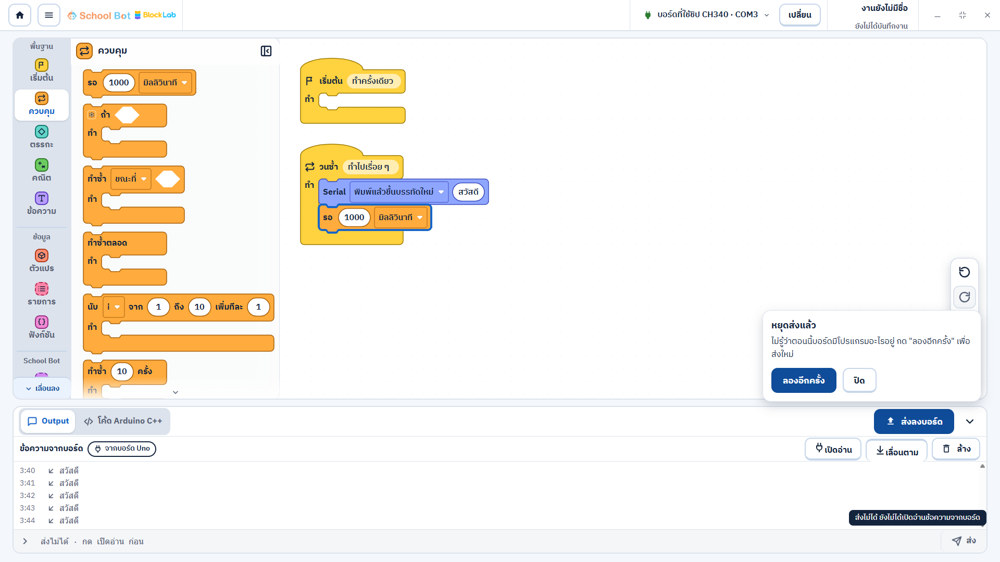
หยุดส่งแล้ว บอกว่าไม่รู้ว่าบอร์ดมีโปรแกรมอะไร และมีปุ่ม "เปิดอ่าน" ให้กดเอง
ผ่าน
15. หน้า Block Lab พังระหว่างส่ง แล้วปิดแอป
build แยกที่ dist/desktop-crash-test โดยใส่ throw ชั่วคราวในการ์ดส่งตอนขั้นส่งลงบอร์ด แล้วลบออกจาก source ทันทีหลัง build (ค้นคำในโค้ดและ frontend ที่ build ใหม่แล้วไม่เจอ)
Alt+F4: หน้าพังที่ 3.1 วินาที → กด "ปิดทันที" → ข้อความ "กำลังรอส่งลงบอร์ดให้เสร็จก่อน (ไม่เกิน 2 นาที) แล้วแอปจะปิดเอง · อย่าถอดสาย USB" ขึ้นที่ 3.3 วินาที ขณะเครื่องมือส่งยังทำงาน → แอปปิดเองที่ 7.9 วินาที หลังเครื่องมือจบ ไม่มี engine ค้าง
อ่าน COM3 หลังปิดแอป ได้ "สวัสดีสวัสดี…" ไม่ขึ้นบรรทัด ตรงกับโปรแกรมใหม่ (Serial.print)
ปุ่มปิดแอป (ยังอยู่บนหน้าที่พัง): ข้อความรอส่งขึ้นที่ 2.4 วินาที แอปปิดเองที่ 7.0 วินาที บอร์ดได้โปรแกรม println "สวัสดี" กลับมาเหมือนก่อนทดสอบ
ข้อสังเกต: หน้าต่างปิดแอปของแอปหลักยังมีประโยคเรื่องหยุดหุ่นและการบันทึกที่ไม่ตรงกับ Block Lab
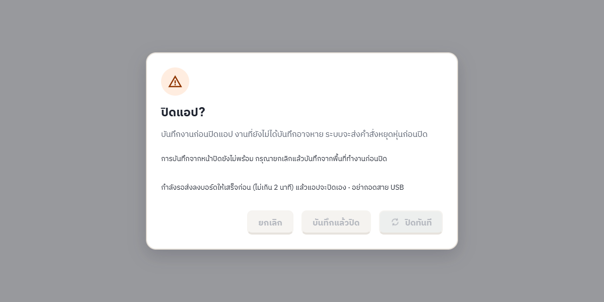
หลังหน้าพัง หน้าต่างปิดแอปบอกว่ากำลังรอส่งลงบอร์ด ปุ่มทั้งหมดรอจนส่งเสร็จ
ขอบเขตของผลนี้
ทดสอบกับบอร์ด UNO โคลน CH340 ตัวเดียว บน Windows 11 เครื่องเดียว ยังไม่ได้ลอง UNO แท้ (ATmega16U2)
ใช้ตัวแอปจาก source ที่ยังไม่ commit · ยังไม่ได้ทำ installer จากโค้ดชุดนี้
ทุกขั้นกดผ่านปุ่มในหน้าต่างแอปจริง ยกเว้นการใส่ข้อความ 90 ตัวในจุด D ที่ใส่ค่าผ่านเครื่องมือทดสอบโดยตรง
บั๊ก A, จุด B, C, D, F แก้แล้วในโค้ดที่ยังไม่ commit · คำถาม E ตัดสินแล้วว่าคงตาม mockup
ข้อ 12–15 ทดสอบด้วยการกดผ่าน Windows UI Automation ทั้งหมด ไม่มีคนกด · ข้อ 15 ใช้ build ที่มีข้อผิดพลาดทดลอง ซึ่งไม่ใช่ตัวที่จะแจก
ยังไม่ได้ทดสอบ: กด F5/Ctrl+R กลางการส่ง · ถอดสายกลางการส่ง · End task/logoff ระหว่างส่ง · เครื่องช้าที่แปลง U8g2 นาน · แขนกลกับ UNO CH340 เสียบพร้อมกัน